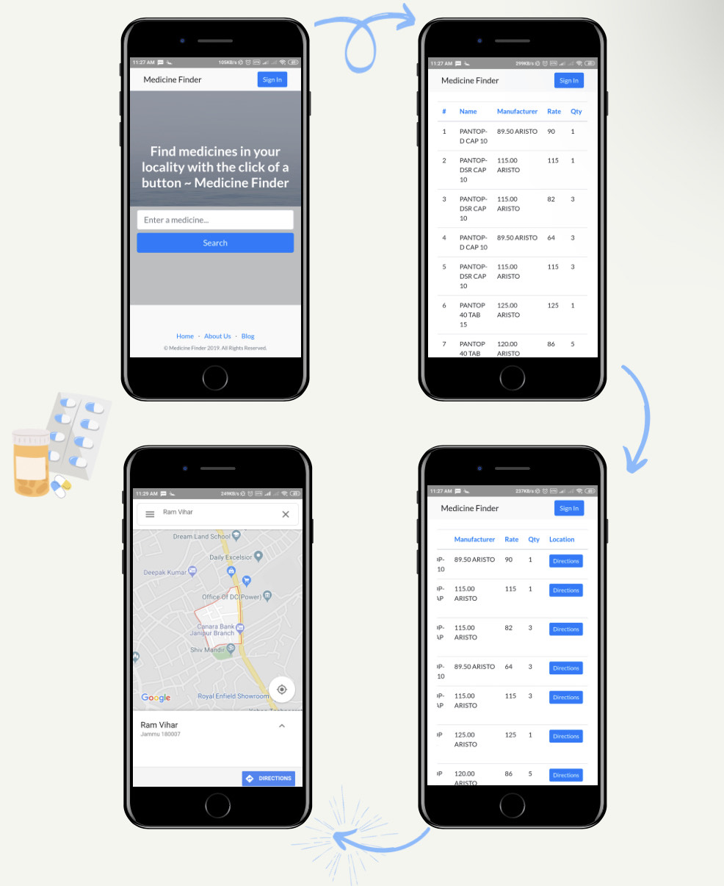

An Android application that allows users to locate the nearest chemist shops that have and sell the medicine they require. The system is fed with the brand name and/or the drug name of the medicine and the application provides the location of the nearest chemist shops that have the particular medicine in stock. Google Map APIs are used to get the location of chemist shops. Data mining techniques are used to extract instant information from chemists database. The database of the medicines with the pharmacies is constantly updated via their systems. Patients and buyers can easily locate and reach the nearest pharmacy in comparatively lesser time, thereby saving the time which would have been wasted while going from shop to shop to look for the medicines.
MedMap
